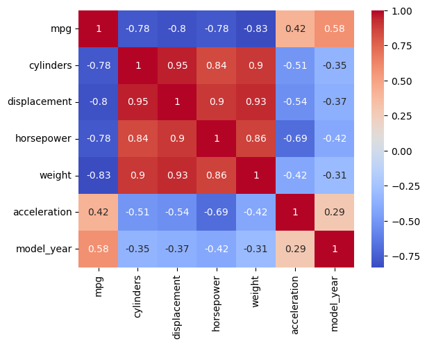

import numpy as np
from scipy.stats import pearsonr
import seaborn as snsdata = sns.load_dataset('mpg')
data.head()| mpg | cylinders | displacement | horsepower | weight | acceleration | model_year | origin | name | |
|---|---|---|---|---|---|---|---|---|---|
| 0 | 18.0 | 8 | 307.0 | 130.0 | 3504 | 12.0 | 70 | usa | chevrolet chevelle malibu |
| 1 | 15.0 | 8 | 350.0 | 165.0 | 3693 | 11.5 | 70 | usa | buick skylark 320 |
| 2 | 18.0 | 8 | 318.0 | 150.0 | 3436 | 11.0 | 70 | usa | plymouth satellite |
| 3 | 16.0 | 8 | 304.0 | 150.0 | 3433 | 12.0 | 70 | usa | amc rebel sst |
| 4 | 17.0 | 8 | 302.0 | 140.0 | 3449 | 10.5 | 70 | usa | ford torino |
使用 pandas.DataFrame.corr 方法计算相关系数矩阵。
correlation_matrix = data.corr(numeric_only=True)correlation_matrix| mpg | cylinders | displacement | horsepower | weight | acceleration | model_year | |
|---|---|---|---|---|---|---|---|
| mpg | 1.000000 | -0.775396 | -0.804203 | -0.778427 | -0.831741 | 0.420289 | 0.579267 |
| cylinders | -0.775396 | 1.000000 | 0.950721 | 0.842983 | 0.896017 | -0.505419 | -0.348746 |
| displacement | -0.804203 | 0.950721 | 1.000000 | 0.897257 | 0.932824 | -0.543684 | -0.370164 |
| horsepower | -0.778427 | 0.842983 | 0.897257 | 1.000000 | 0.864538 | -0.689196 | -0.416361 |
| weight | -0.831741 | 0.896017 | 0.932824 | 0.864538 | 1.000000 | -0.417457 | -0.306564 |
| acceleration | 0.420289 | -0.505419 | -0.543684 | -0.689196 | -0.417457 | 1.000000 | 0.288137 |
| model_year | 0.579267 | -0.348746 | -0.370164 | -0.416361 | -0.306564 | 0.288137 | 1.000000 |
sns.heatmap(correlation_matrix,
annot=True,
cmap='coolwarm')<Axes: >
sns.pairplot(data[[
'mpg', 'weight', 'horsepower', 'acceleration',
]])def corr_p(df):
"""Generates a tuple containing the correlation coefficients matrix and p-values matrix.
Args:
df (dataframe): input dataframe, each column as a feature, each row as an observation
Returns:
res: tuple with correlation coefficients matrix and p_values matrix
"""
corr_matrix = df.corr(numeric_only=True)
p_value_matrix = df.corr(
numeric_only=True,
method = lambda x, y: pearsonr(x,y)[1]
)
res = (corr_matrix, p_value_matrix)
return resdata_trunc = data[[
'mpg', 'weight', 'horsepower', 'acceleration',
]]corr_p(data_trunc)( mpg weight horsepower acceleration
mpg 1.000000 -0.831741 -0.778427 0.420289
weight -0.831741 1.000000 0.864538 -0.417457
horsepower -0.778427 0.864538 1.000000 -0.689196
acceleration 0.420289 -0.417457 -0.689196 1.000000,
mpg weight horsepower acceleration
mpg 1.000000e+00 2.972800e-103 7.031989e-81 1.823092e-18
weight 2.972800e-103 1.000000e+00 1.364347e-118 3.243794e-18
horsepower 7.031989e-81 1.364347e-118 1.000000e+00 1.581886e-56
acceleration 1.823092e-18 3.243794e-18 1.581886e-56 1.000000e+00)